|
Weijian Mai I am a first-year PhD student in Musketeers Foundation Institute of Data Science, University of Hong Kong, where I am jointly supervised by Andrew Luo and Yi Ma. Concurrently, I hold an internship position at Shanghai AILab, working under the mentorship of Chunfeng Song. My research focuses on the intersection of NeuroAI, Generative AI, and multimodal models—with a goal to bridge biological neural mechanisms and artificial intelligence systems for more robust, human-aligned AI capabilities. |
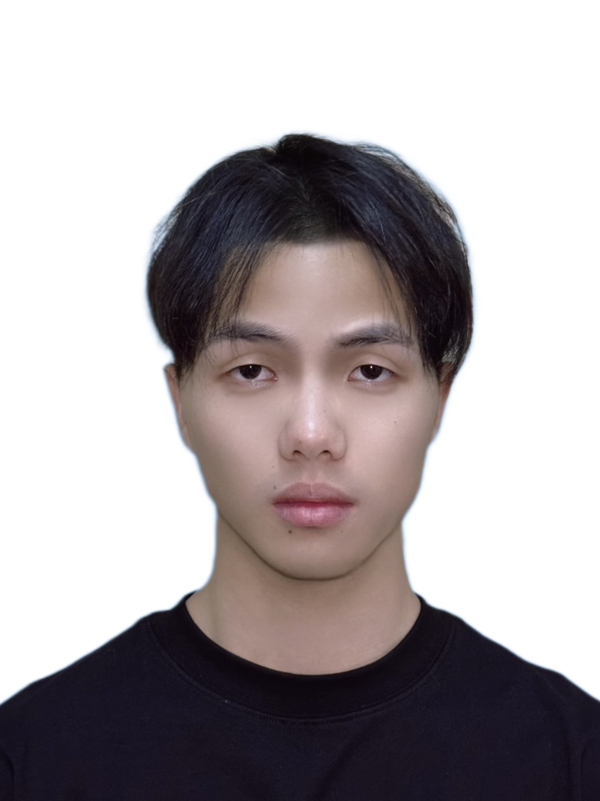 |
{kind=link}
News |
| 2026.02 | NeuroFlow: Toward Unified Visual Encoding and Decoding from Neural Activity is accepted by CVPR 2026! |
| 2026.02 | Meta-Learning In-Context Enables Training-Free Cross Subject Brain Decoding is accepted by CVPR 2026! |
Research |

|
NeuroFlow: Toward Unified Visual Encoding and Decoding from Neural Activity
Weijian Mai, Mu Nan, Yu Zhu, Jiahang Cao, Rui Zhang, Yuqin Dai, Chunfeng Song† Andrew F. Luo†, Jiamin Wu† CVPR 2026 |
|
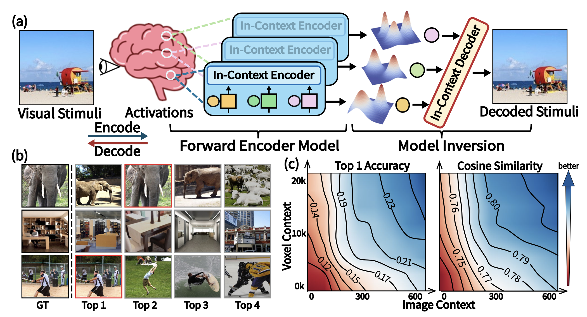
|
Meta-Learning In-Context Enables Training-Free Cross Subject Brain Decoding
Mu Nan, Muquan Yu, Weijian Mai, Jacob S. Prince, Hossein Adeli, Rui Zhang, Jiahang Cao, Benjamin Becker, John A. Pyles, Margaret Marie Henderson, Chunfeng Song, Nikolaus Kriegeskorte, Michael J. Tarr, Xiaoqing Hu, Andrew F. Luo† CVPR 2026 |
|
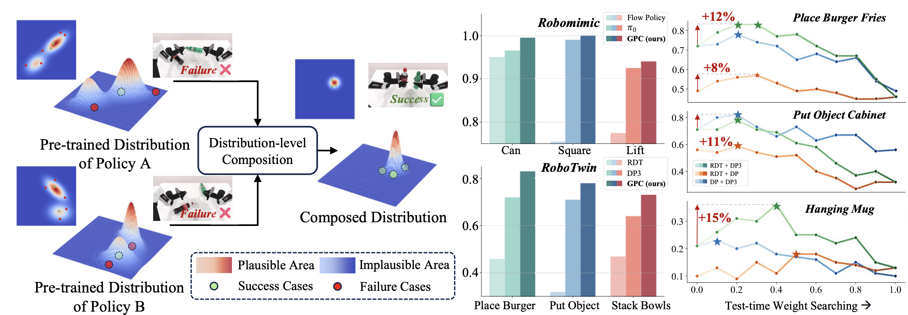
|
Compose Your Policies! Improving Diffusion-based or Flow-based Robot Policies via Test-time Distribution-level Composition
Jiahang Cao, Yize Huang, Hanzhong Guo, Qiang Zhang, Rui Zhang, Weijian Mai, Mu Nan, Jiaxu Wang, Hao Cheng, Jingkai SUN, Gang Han, Wen Zhao, Yijie Guo, Qihao Zheng, Xiao Li, Chunfeng Song, Ping Luo Andrew F. Luo† ICLR 2026 |
|
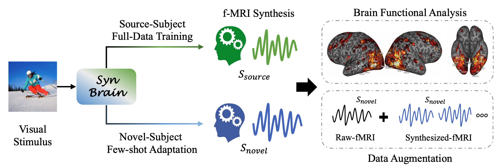
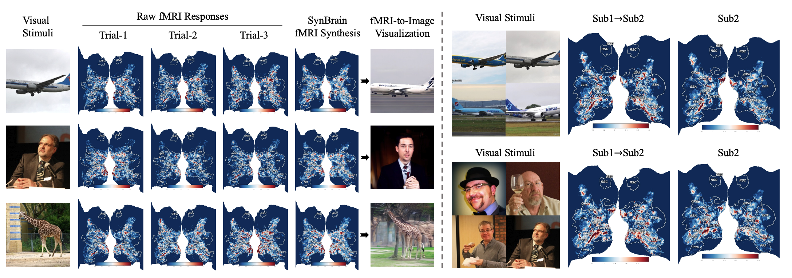
|
SynBrain: Enhancing Visual-to-fMRI Synthesis via Probabilistic Representation Learning
Weijian Mai, Jiamin Wu, Yu Zhu, Zhouheng Yao, Dongzhan Zhou, Andrew F. Luo, Qihao Zheng, Wanli Ouyang, Chunfeng Song NeurIPS 2025 |
|
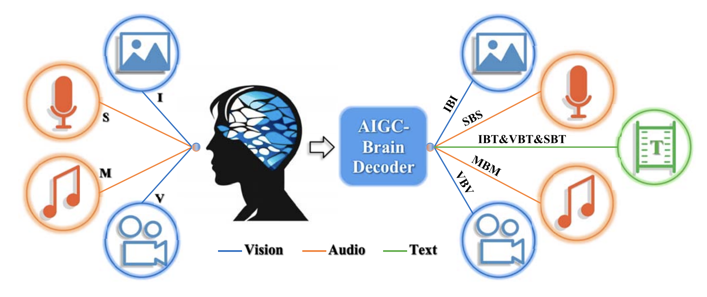
|
Brain-Conditional Multimodal Synthesis: A Survey and Taxonomy
Weijian Mai, Jian Zhang, Pengfei Fang, Zhijun Zhang IEEE Transactions on Artificial Intelligence 2025 |
|
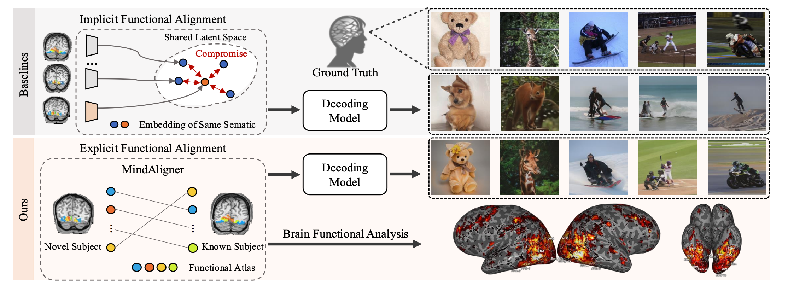
|
MindAligner: Explicit Brain Functional Alignment for Cross-Subject Visual Decoding from Limited fMRI Data
Yuqin Dai, Zhouheng Yao, Chunfeng Song, Qihao Zheng, Weijian Mai, Kunyu Peng, Shuai Lu, Wanli Ouyang, Jian Yang, Jiamin Wu ICML 2025 |
|
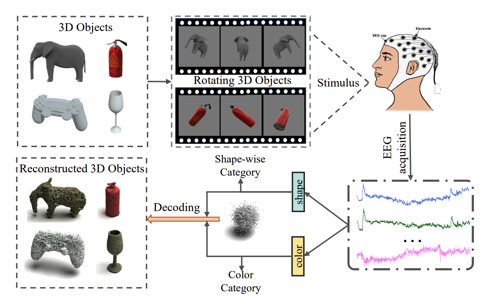
|
Neuro-3D: Towards 3D visual decoding from EEG signals
Zhanqiang Guo, Yu He, Jiamin Wu, Yonghao Song, Jiahui Bu, Weijian Mai, Qihao Zheng, Wanli Ouyang, Chunfeng Song CVPR 2025 |
|
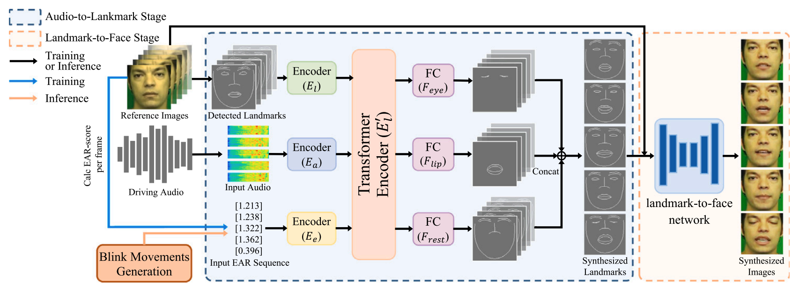
|
VPT: Video portraits transformer for realistic talking face generation
Zhijun Zhang, Jian Zhang, Weijian Mai Neural Networks 2025 |
|
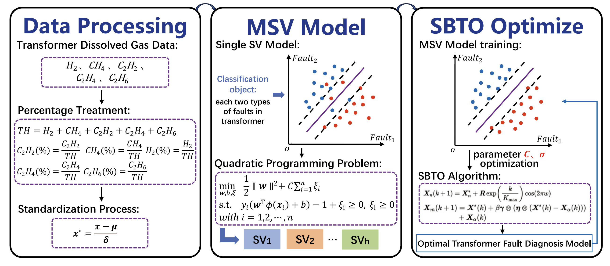
|
A novel swarm budorcas taxicolor optimization-based multi-support vector method for transformer fault diagnosis
Yong Ding, Weijian Mai, Zhijun Zhang Neural Networks 2025 |
|
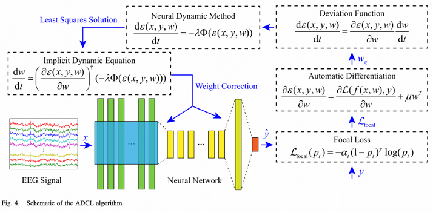
|
Convolutional dynamically convergent differential neural network for brain signal classification
Zhijun Zhang, Yu He, Weijian Mai, Yamei Luo, Xiaoli Li, Xiaoming Huang, Run Lin IEEE Transactions on Neural Networks and Learning Systems 2024 |
|
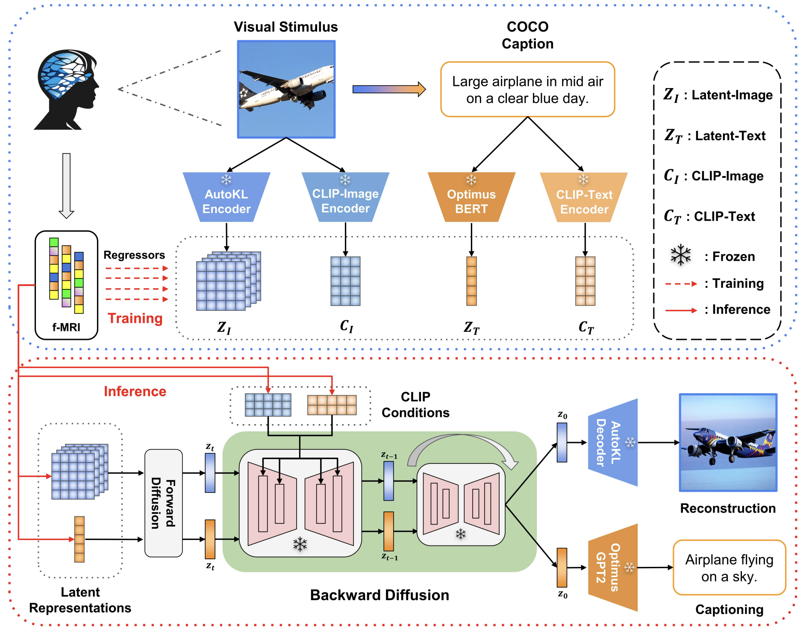
|
UniBrain: Unify Image Reconstruction and Captioning All in One Diffusion Model from Human Brain Activity
Weijian Mai, Zhijun Zhang Arxiv 2023 |
|
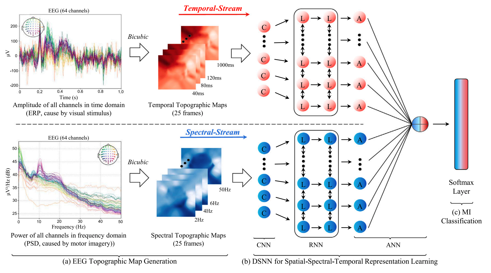
|
Learning spatial-spectral-temporal EEG representations with dual-stream neural networks for motor imagery
Weijian Mai, Fengjie Wu, Xiaoting Mai Biomedical Signal Processing and Control 2024 |